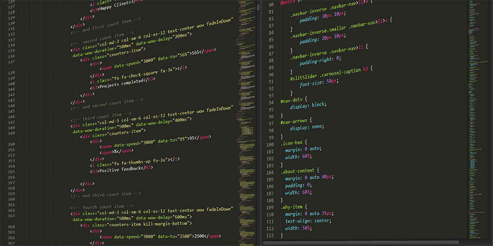

Website Creation Methods
Introduction
Are you trying to create your first website? Whether you are IT guy / girl or not here you can choose the right method you can work with. This article is going to provide you with the basic and most used methods for building a webpage, some advantages and disadvantages of those methods, and of course resources / links in order for you to start somewhere.
Aimed At
Me personally I am an IT guy and I have just started to learn web development a month ago (HTML, CSS and Bootstrap), so please do not expect to dive into some heavy and complex topics here. These information are going to be useful mostly for those who have never created any website before or someone who writes a blog or publishes articles on the internet from time to time. The idea is to give basic overview with what you can work or come into contact with.
1. HTML & CSS

Almost all the websites on the web are created and designed by using HTML/CSS and programming languages such as php, java, jquery, python etc.
Even the website builder application, wordpress.com, wordpress.org, wix.com, google.com, facebook.com and amazon.com, all these websites are created by using HTML,
CSS and various programming languages. The use of programming languages is based on the level of functionality that anyone requires in the website.
If you're a more adventurous webmaster you can create your webpages from scratch. Webpages are simply plain text files you can edit using software included with
your computer like Notepad on Windows and TextEdit on Mac. There are many thousands of HTML web building sites available with copy and paste code samples and
tutorials for creating webpages. If you want to make your work easier you can use Bootstrap framework or you can download a finished template and
just redesign it according to your needs. This is a good learning experience, however it can take considerable time to learn how HTML, CSS, Javascript and
jQuery (a library of Javascript functions) work together for website building.
Here are some links on HTML & CSS tutorials.
W3Schools
W3C HTML5 documentation
TutorialsPoint CSS
Bootstrap framework
2. WordPress

WordPress.com mostly known as blogging platform that you can use to create free website and nearly one third of all websites on the internet are created
using WordPress. Most bloggers use it to create blogs and it is considered to be the best in terms of SEO and
indexing on Search Engines. The functionality and features in the free version are not as helpful as they are in the premium version.
But still it’s good for using it as a practice platform for students and beginners. It is a software that you can use to create a website quickly and easily.
The biggest advantages of using WordPress.com is that your website or blog will get free hosting and security. Wordpress isn't a website builder.
Instead, Wordpress is an open source Content Management System (CMS). This makes it sort of a hybrid between a builder and using HTML software as far as
the editing goes (the editor works through a web browser). The editing interface works more like HTML software and you'll use some drag and drop to add
what are called plug-ins for interactive and dynamic webpage elements. Some time is required to learn the interface even if you're creating a small or
simple website.
Resources:
WordPress.com
WordPress.org
Pros & Cons of WordPress
3. Wix
Wix Website Building platform is one of the easiest and simplest ways to create any type of website. There are ready made templates you can choose from. Using
Wix.Com, you can create business website, blog website, portfolio website and eCommerce store websites in few hours. You can also select between free and premium plans
that suit you needs. This cloud based website building platform does not require any advanced technical coding skills, such as HTML, CSS, or Java.
Any person with basic computer knowledge or course can easily use it to build a website. Wix is a widely popular website builder on the internet.
It’s a website but you can say its like an application such as Microsoft Word that you use to create resume and forms. If you are not planning to
build a complex website and you do not really want to learn programming then Wix is perfect for you.
Resources:
Wix
Pros & Cons of Wix
4. Hugo

Hugo is an open source static site generator written in Go programming language. It is fast, flexible and great for both programmers and non-technical people.
It is mostly used for creating blogs. Static webpages provide improved security, improved performance for end users, fewer or no dependencies on systems
such as databases or other application servers, cost savings from utilizing cloud storage, as opposed to a hosted environment in comparison with dynamic ones.
From my own experience, I would say it is better if you are a bit more technical type of person if you wish to work with Hugo, since once you download a
certain template that you want to use for your website, you should have at least basic overview of different files and folders that you are going to use.
It does not require to use any programming languages, but if you want to redesign your template or add some functionality, you may need to learn some.
Resources:
Hugo
5. Blogger
Blogger is a blog-publishing service that allows multi-user blogs with time-stamped entries. The blogs are hosted by Google and generally accessed from a
subdomain of blogspot.com. A user can have up to 100 blogs per account. If you are a blogger, I believe this is the simplest method for you to publish
something quickly and easily. It does not support as many templates as other website builders, but for simple stories it is enough.
Resources:
Blogger
6. Microsoft Word
Finally, for those who want to keep it simple, here is one special and easy method on how to convert word document into a webpage. While it is possible to generate an HTML page with Word, it's generally recommended that you do not do so if you intend for the page to be used in any professional or widely promotional capacity. You can create an HTML page by saving you document as .html file.
Conclusion
If you want a unique website that has not existed before, then choose HTML/CSS/PHP or Python programming language. This is deepest and most classical method,
providing unmatched functionality and versatility. But it can take lots of time. If you just need a blog without hosting fees and minimal technical works
then you can select
WordPress,
Wix,
SquareSpace,
Weebly,
Tumblr etc.
These are intuitively designed so that anyone with basic computer
knowledge and a working internet connection can use them easily and quickly. That is all for today, thanks for reading and have a nice day.
Date: 24.04.2019
Author: Samuel Ivan